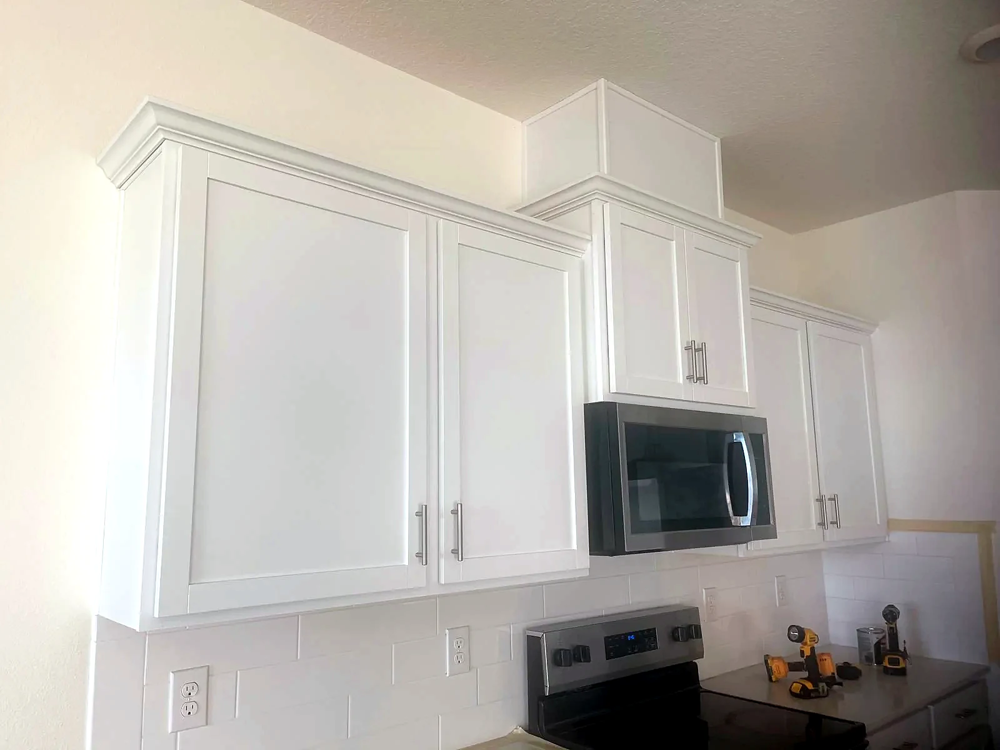
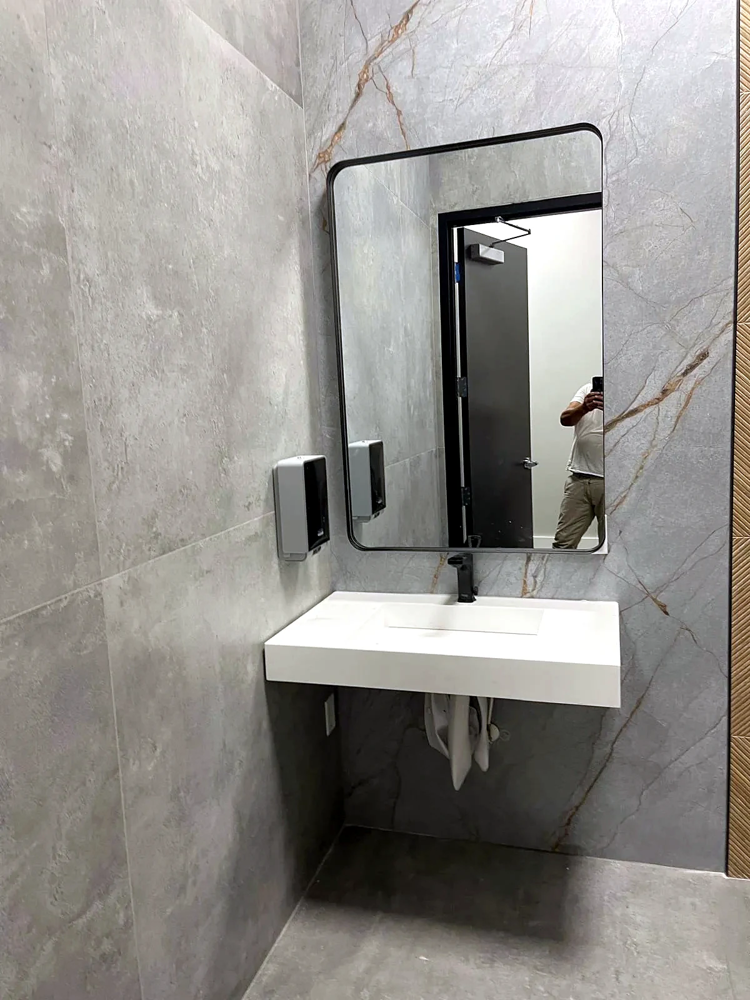
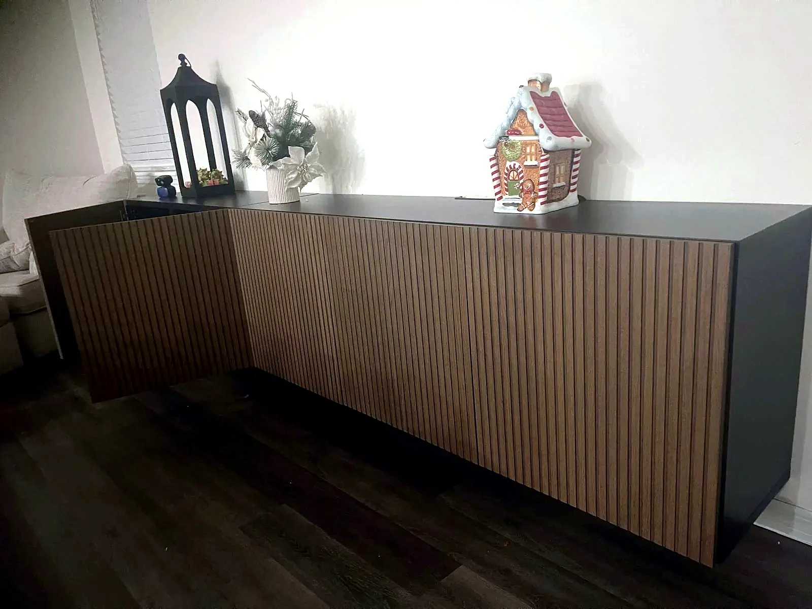
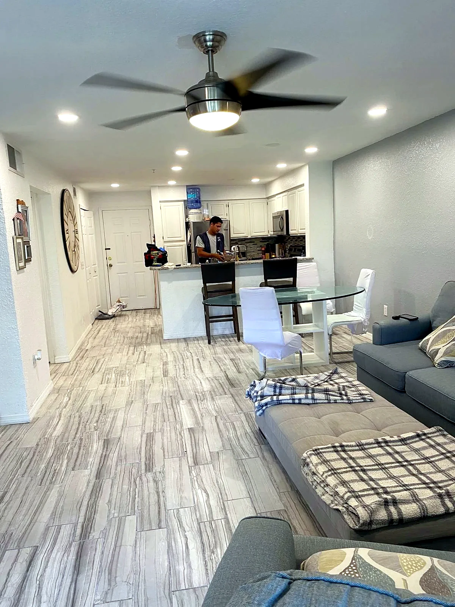
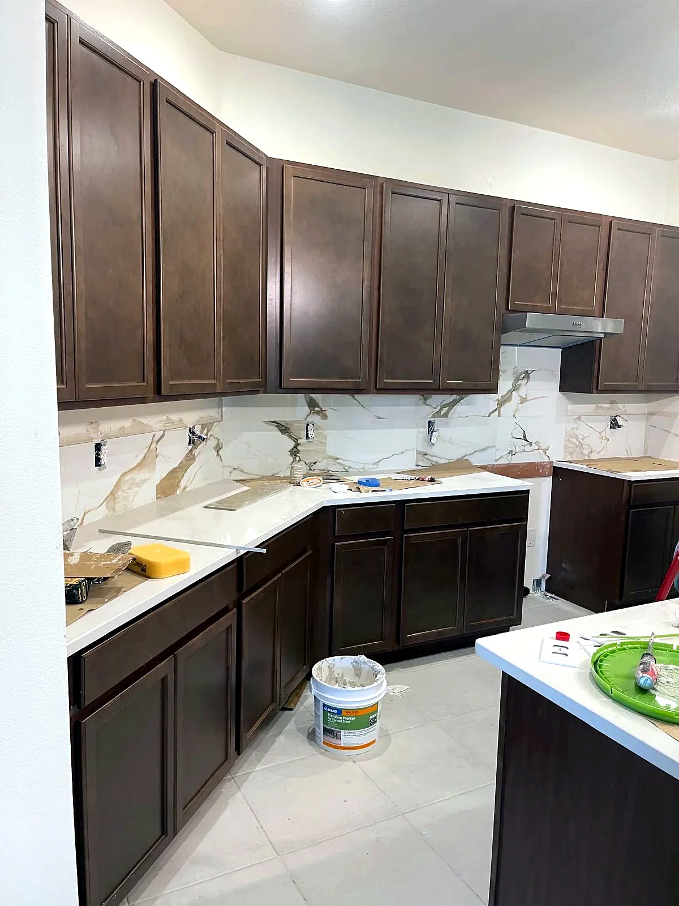

Escuchamos
Nos cuentas cómo utilizas tu espacio y qué buscas.

Diseño, fabricación e instalación de cocinas y muebles a medida. Espacios funcionales, modernos y pensados para la vida real.
Estética y detalles que realzan tu hogar.
Soluciones prácticas para cada día.
Opciones adaptadas a lo que necesitas.
Una cocina bonita no tiene por qué costar de más. Apostamos por distribuciones bien pensadas, materiales adecuados y muebles que aprovechan cada centímetro.
Conoce nuestro proyecto ↗
Gabinetes prácticos, adaptados a tu espacio y estilo.

Actualizar lo que tienes puede transformar tu día a día.

Orden y funcionalidad, incluso en espacios pequeños.

Soluciones de almacenaje para cada rincón del hogar.

01 / TRABAJOS REALES02 / DETALLES REALES03 / COCINAS FUNCIONALES
04 / MATERIALES Y ACABADOS 05 / BAÑOS BIEN PENSADOS
05 / BAÑOS BIEN PENSADOSUna selección de trabajos reales de Nemihas Cabello que muestran cocinas, baños y mobiliario hechos con criterio práctico y cuidado estético.

CABELLO nace en Ciudad Guayana con una idea sencilla: ofrecer soluciones para cocinas e interiores que combinen buena presencia, utilidad y presupuestos razonables. Sin complicaciones innecesarias.
Conócenos↗Un proceso claro, de principio a fin.
Nos cuentas cómo utilizas tu espacio y qué buscas.
Planteamos una solución con distribución y acabados.
Preparamos el mobiliario según lo acordado.
Colocamos el mobiliario y revisamos los detalles.
Cuéntanos qué necesitas. Te ayudamos a encontrar una solución que encaje con tu espacio y con tu presupuesto.